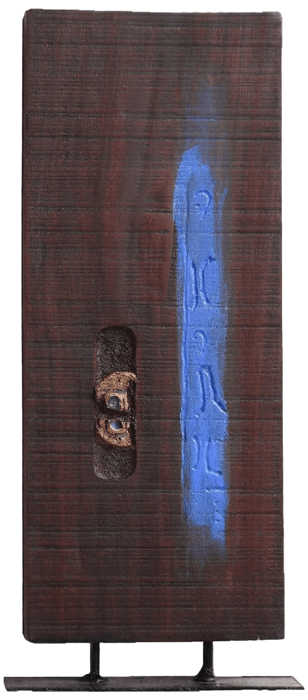
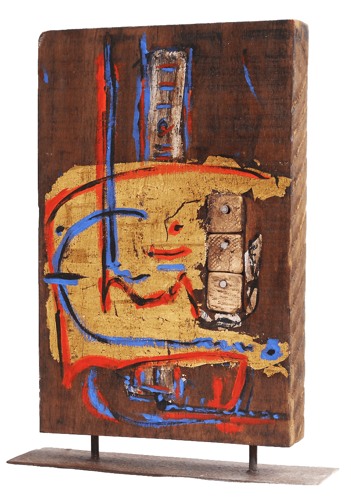
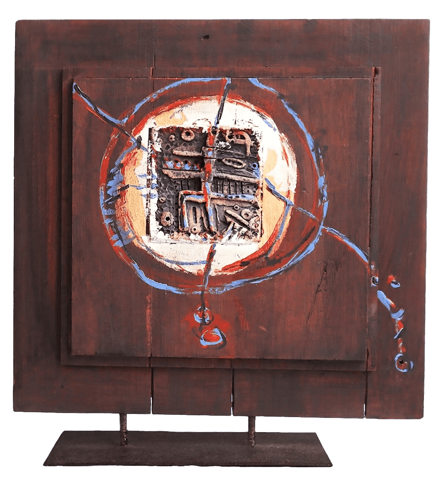
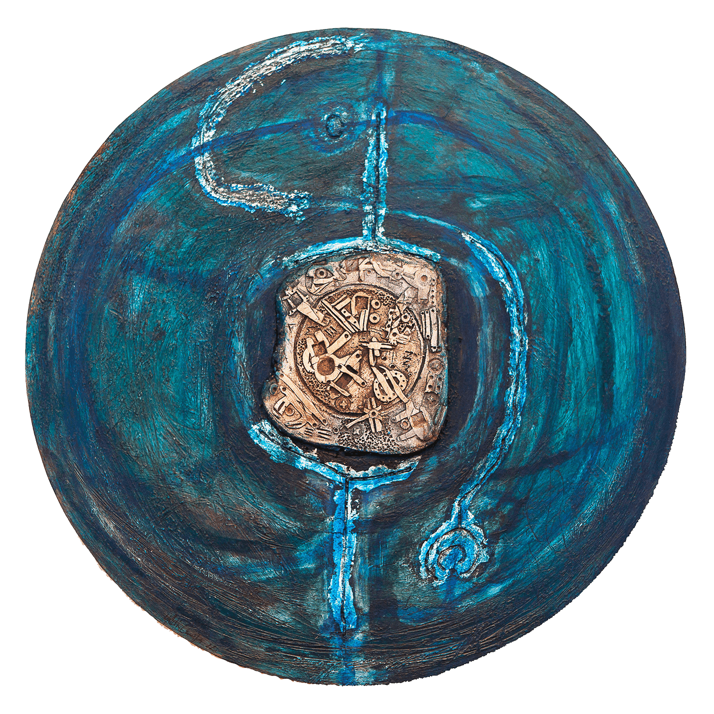
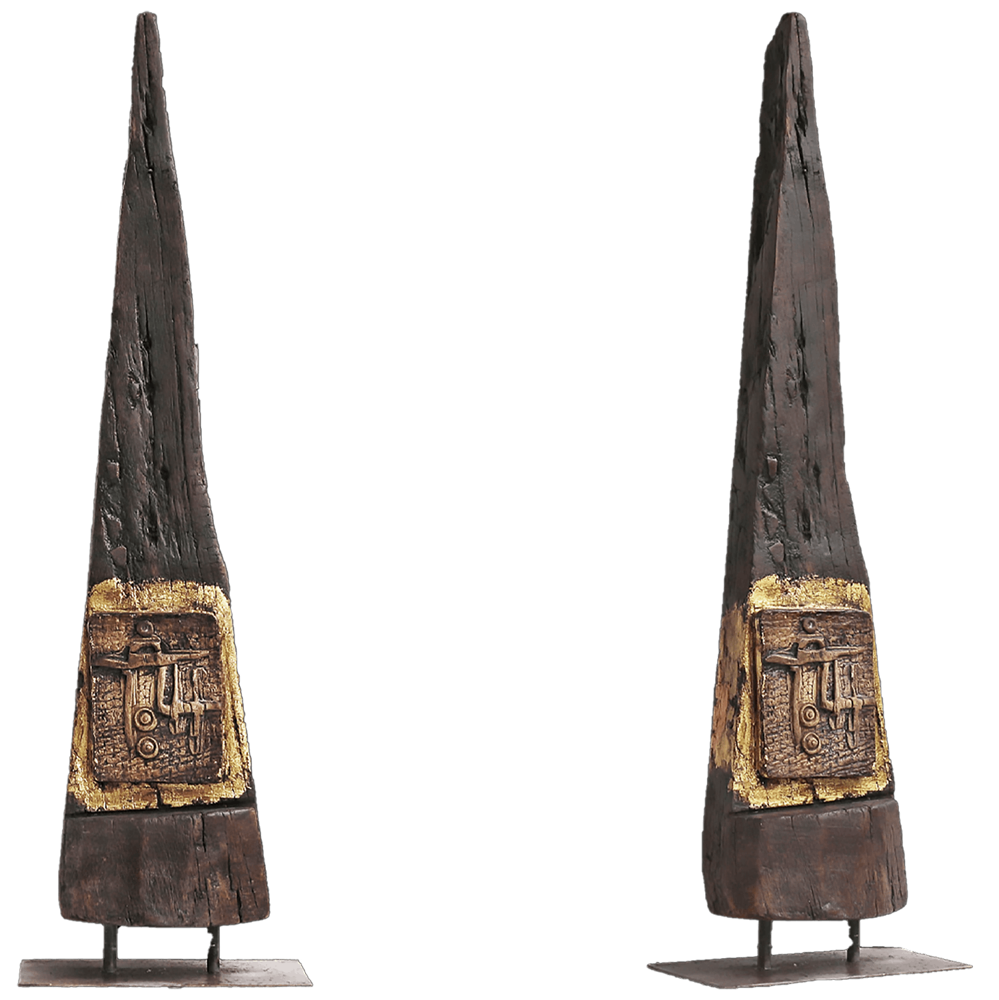
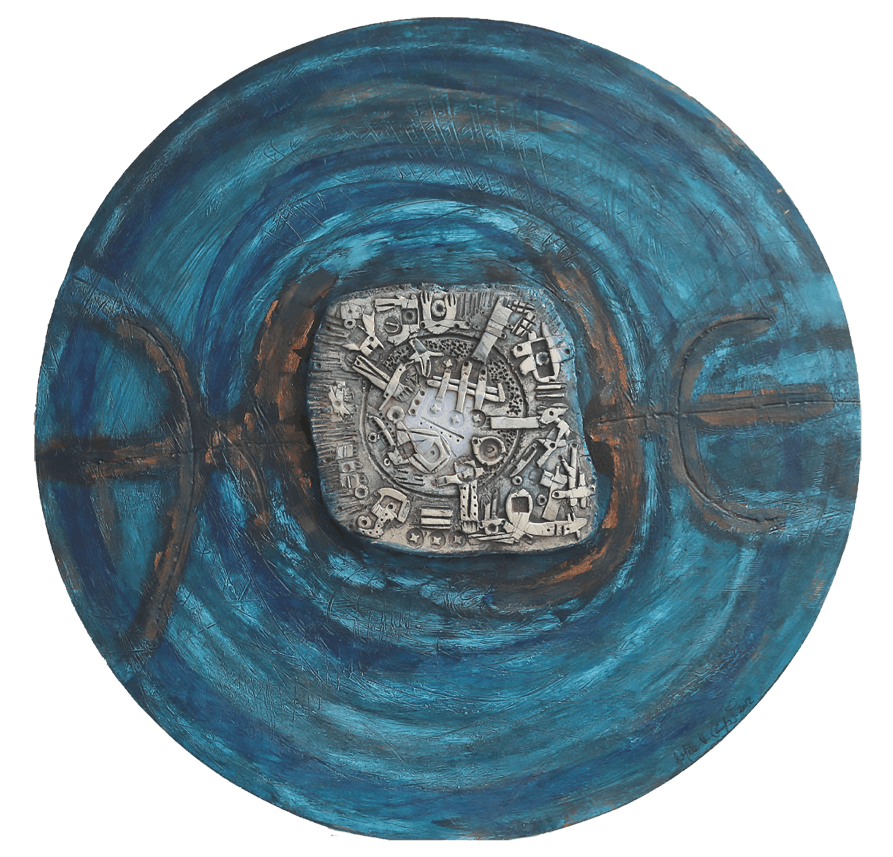
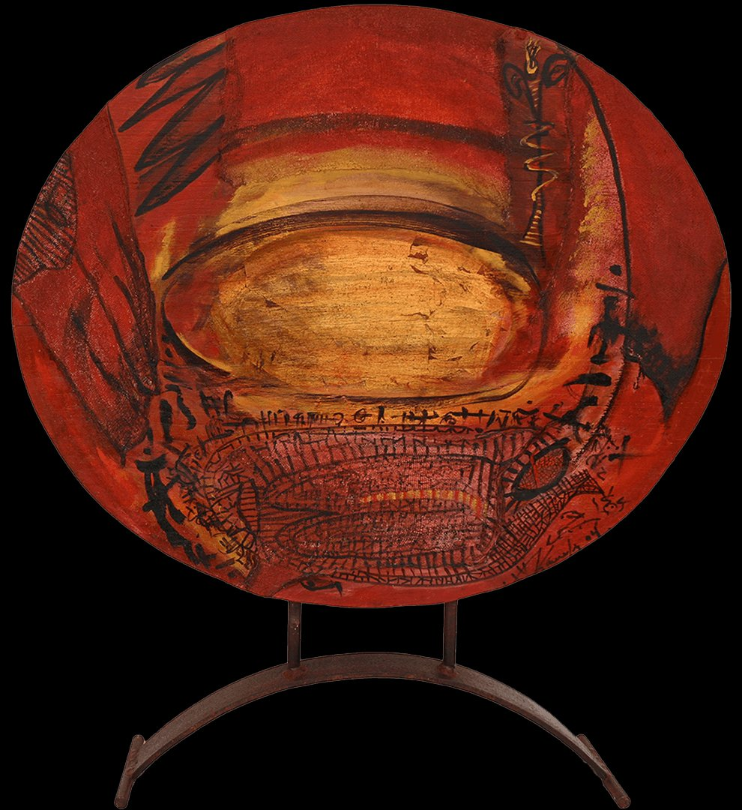
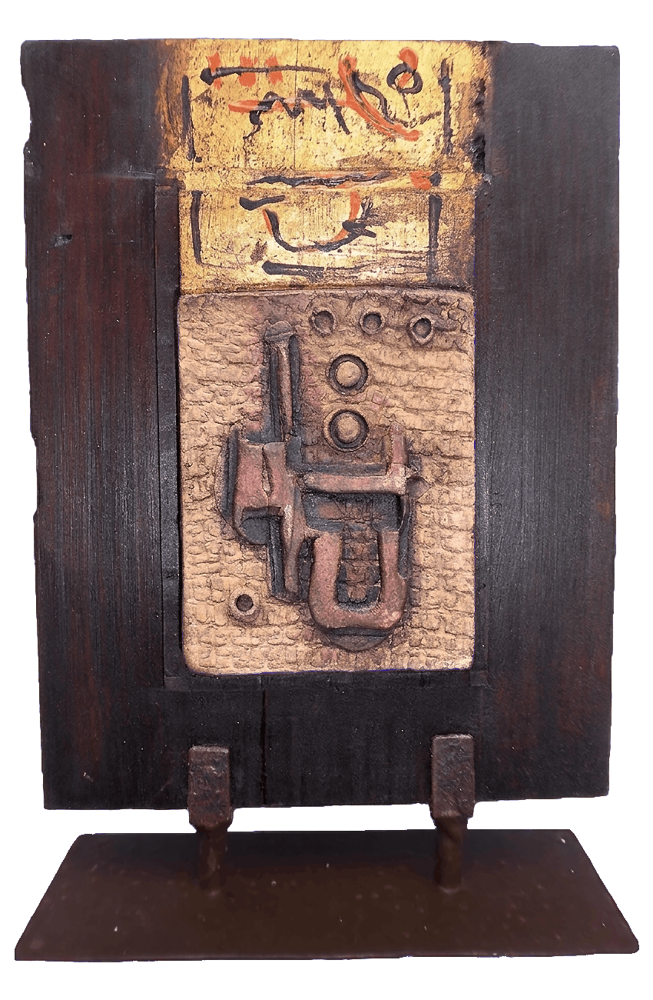
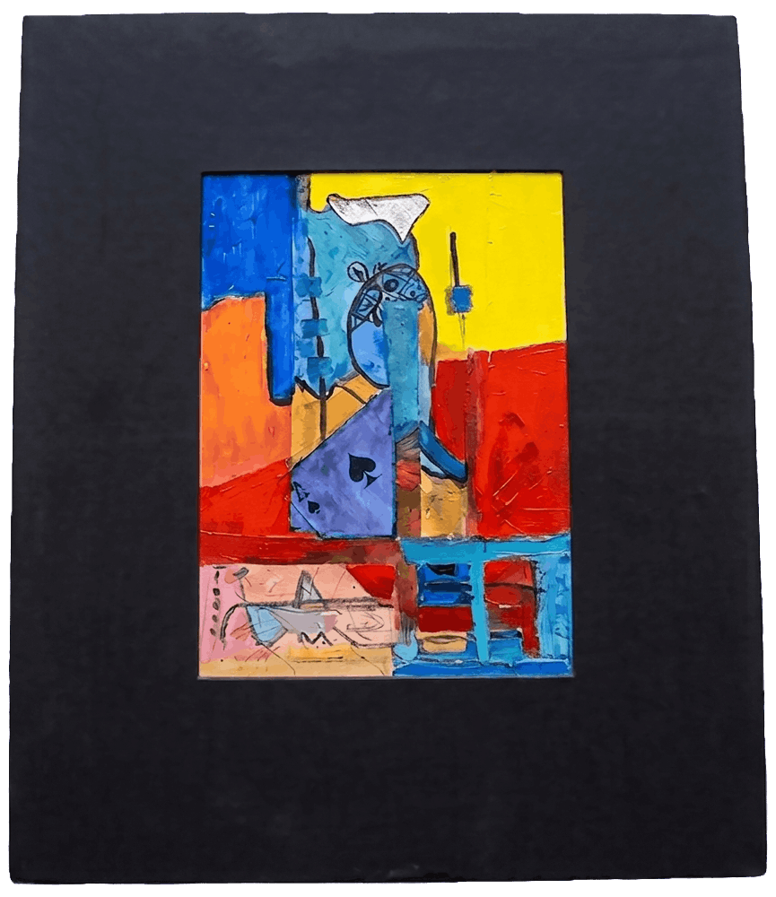

Get in touch with me.
My sculptures emerge from the encounter between matter and memory — wood, stoneware, ceramics, and gold leaf, surfaces that carry the marks of time and transformation. Each piece follows a visual language rooted in contemplation: mythical symbols, organic forms, a quiet calligraphy that does not explain but evokes. Every sculpture is unique, shaped across my studios in Caracas, Tenerife, and Berlin.









Any questions? · Simply get in touch
Inquire about my artwork